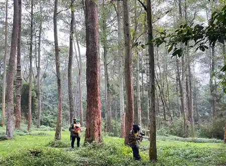

Konsep modern dari liburan bukan sekadar berjalan-jalan dan mengambil swafoto di depan objek buatan saja. Tren pariwisata transformatif terus mengemuka dan menjadikan pencarian topik paket wisata edukasi pertanian dan outbound sebagai magnet baru bagi sekolah tingkat dasar (Study Tour LDKS) hingga pelatihan instansi dinas pemerintahan. Alih-alih melulu menguras keringat dengan game fisik super berat, konsep terpadu *Agro-Edu-Tourism* di Batu Malang menawarkan relaksasi intelektual mengenai seluk-beluk alam, ekologi, dan pertanian hidroponik atau konvensional.
Topografi Kota Batu secara geografis dikaruniai tanah vulkanik super subur di lereng bukit Arjuna dan Panderman. Kawasan dingin ini dikenal sebagai lumbung apel nasional sekaligus penghasil sayuran mayur tropis terbesar di Jawa Timur. Penyatuan antara fasilitas kebun raksasa (*Agrowisata*) dengan lahan lapang rumput milik Vendor Event Organizer menciptakan perpaduan kurikulum *Fun Game* yang amat interaktif dan tidak dijumpai di area wisata laut pesisir maupun pulau seribu pada konvensi tradisional.
Kenapa Harus Mengombinasikan Pertanian dan Outbound?
Jawabannya sangat sederhana: Keseimbangan Asah Otak Kiri dan Motorik Kanan. Sebagian besar acara wisata konvensional terhukum pada pola beramai-ramai masuk ke wahana rekreasi buatan, mencoba *roller coaster*, duduk, lantas kembali ke bus. Namun di saat penyelenggara acara (*EO Outbound Malang*) meracik skenario pertanian ke dalamnya, *Value* liburan Anda meroket ke udara.
1. Edukasi Pelestarian Lingkungan Sejak Dini
Bagi segmentasi anak usia Taman Kanak-kanak hingga Sekolah Dasar, *paket wisata edukasi pertanian dan outbound* membantu mencetak pondasi ekologi. Mereka diajak melepaskan alas kaki, merasakan sensasi lumpur sawah sungguhan di telapak telanjang, membajak sawah bersama kerbau lokal, serta menanam padi langsung di petak-petak terasering (*rice paddy*). Anak kecil akan belajar mencintai sebutir nasi di meja makan karena mereka tahu proses menanamnya tak semudah membalikkan telapak tangan.
2. Refleksi Kedisiplinan ala Pertanian Bagi Korporasi
Bagaimana dengan rombongan instansi besar atau karyawan pabrik raksasa? Skenario yang dibawakan instruktur game (*Game Master*) akan dikonversi menjadi filosofi kepemimpinan bisnis bisnis *planting* (menanam), *caring* (merawat), dan *harvesting* (memanen). Bahwa memanen laba perusahaan tidak mungkin dicapai tanpa berkorban mengolah tanah lelah dan menyiraminya. Permainan menanam sayur organik bersama tim direksi akan menyamaratakan strata ego jabatan menjadi kehangatan keluarga kecil.
Lanskap Skenario Aktivitas Edu-Agro Farming
Bila merujuk pada rentang *rundown* yang umum dipraktekkan, terdapat ragam persilangan aktivitas seru yang dirancang dinamis mulai dari pagi hari terbit bulan hingga jam makan siang usai.
"Kotor itu baik. Sentuhan langsung dengan unsur tanah murni (*Grounding*) tidak saja menyerap elektron bebas penyembuh penyakit fisik, tetapi menyingkirkan kepenatan artifisial dari menatap lampu monitor komputer secara radikal."
1. Sesi Tour Ekologi (Farm Safari)
Pagi hari, peserta akan didistribusikan menggunakan mobil wara-wiri (*shuttle*) mengelilingi kebun seluas puluhan hektare (misal di kawasan Kusuma Agrowisata atau Brakseng Sumber Brantas). Disana disajikan materi komprehensif mengenai pemilihan bibit biji terbaik, penjelasan teknik perbanyakan stek dan okulasi, hingga pemupukan kompos kandang. Ini adalah sesi intelektual ringan pemanasan yang penuh tanya jawab tajam.
2. Petik Buah dan Panen Skala Sungguhan
Inilah sesi termanis dari paket wisata edukasi pertanian dan outbound. Selepas tur, peserta dipersenjatai gunting dahan dan keranjang rotan untuk menembus lorong pohon apel rumput panjang. Anda diperbolehkan memetik dan langsung memakan apel/jeruk/jambu merah muda segar di tempat. Buah-buah tersebut pun boleh ditimbang kiloan untuk dibawa pulang menggunakan bis sebagai oleh-oleh asli buah tangan anak istri tangga.

3. Games Outbound berbasis Tim & Alam
Setelah kenyang melahap ratusan buah tropis, tibalah urat nadi sesungguhnya. Formasi baris dibentuk di lapangan karpet rumput gajah (*Ground*). Mulai dari *Ice Breaking*, Senam irama konyol, hingga aneka perlombaan estafet. Contoh paling tenar dari penggabungan ini adalah *Blind Plant*: Seorang anggota tim ditutup matanya dan harus menanam tunas sayur (*cabbage*) sambil dipandu teriakan kode riuh dari 10 anggota lainnya di belakang garis sejauh 15 meter! Betapa repot sekaligus pecahnya tawa riuh di antara pegunungan asri tersebut!

Sinergi antara modul kepemimpinan dan rasa peduli merawat alam adalah tonggak pendidikan luar ruang (Outdoor Education) terhebat masa kini berkelanjutan (*Sustainability*).
Estimasi Anggaran yang Ditawarkan Tahun 2026
Jangan mengira wisata kombo (*Combo Package*) yang kaya bobot material ini bernilai ratusan juta! Karena ini berkonsep masal, rata-rata penyelenggara EO di Jawa Timur telah membuat standarisasi pasaran agar tetap masuk dalam rencana kas panitia kecil sekolah maupun koperasi.
- Paket *Half Day Kids* (Anak Sekolah): Dipatok mulai dari rentang Rp 120.000 s/d Rp 180.000 per siswa. Rincian termasuk tiket masuk agro batu, lahan pertanian sayur/telur, edukasi Kakak Fasilitator bernada ceria, snack *healthy food*, sesi menanam, dan juga makan siang perkotak.
- Paket Korporasi Medium *(Adult Edu)*: Berkisar di harga Rp 180.000 s/d Rp 320.000 per pax/karyawan. Bedanya, tantangan gamenya dikalibrasi lebih rumit secara kinetik, serta sesi makan siangnya dalam format santapan *Buffet Prasmanan* megah.
Tentu Anda juga bisa menaikkan kasta acara menjadi berdurasi 2 Hari 1 Malam alias melibatkan pesanan blok kamar Resor Hotel jika Anda mengadakannya dalam tajuk Rapat Kerja Tahunan (*Raker*) sekaligus liburan tutup tahun bonus.

Kesimpulan
Terobosan masif bernama paket wisata edukasi pertanian dan outbound menorehkan tinta emas dalam industri *Team Building* pariwisata Indonesia, spesifiknya area lumbung hijau Kota Batu. Merengkuh kesadaran akan proses tumbuh-kembang (*Growth Mindset*) alam secara natural ke dalam pembentukan otak bisnis maupun pemikiran akademis siswa terbukti jauh lebih ampuh dan abadi ingatannya (*memorable*) daripada dicekoki sekadar teori papan tulis kelas sempit.